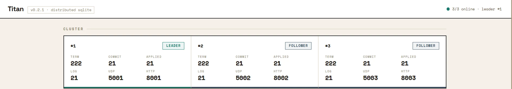
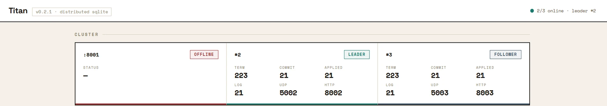
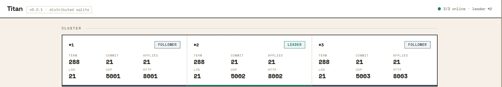
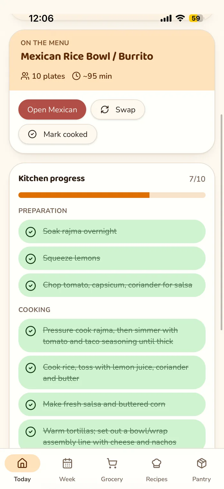
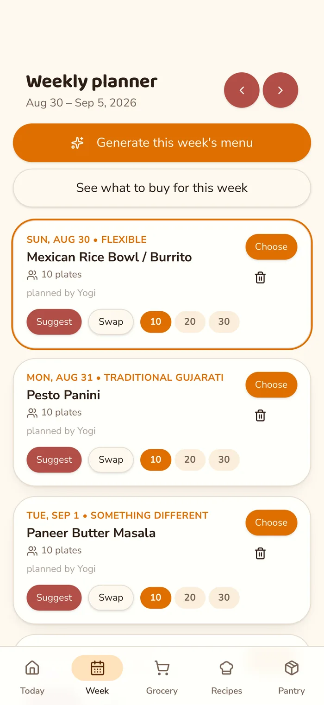
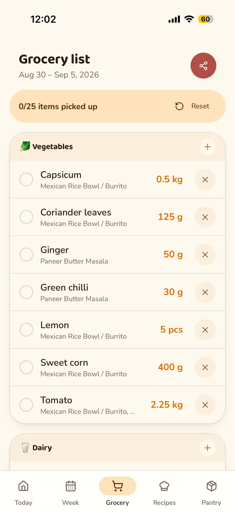
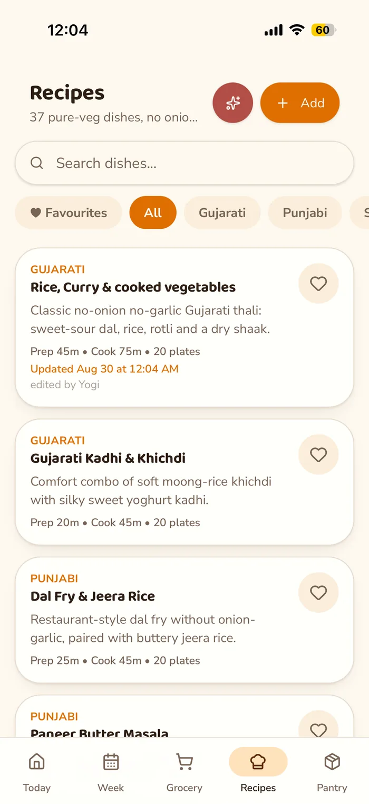

Production analysis MCP server
Used by analysts and managers where I work.
Someone asks a question in plain English. The answer comes back from the production database, with the equipment manuals read alongside it.
Underneath, running SQL, generating a document and looking something up in a manual are three separate tools rather than one. The model inspects the schema before it asks, so it knows what exists, and every call it makes is written to an audit log.
Questions used to queue behind an analyst. Now it is the first thing I open.
Python · FastMCP · SQL Server · RAG
Pipelines and dimensional models
Used by every report the business runs on.
Every number the business reports comes through here.
Around fifteen pipelines, batch and streaming, pull from the ERP system and from the machines themselves, reading sensors straight off the hardware over OPC-UA. Terabyte scale, and no two sources agree on anything until they land.
What they land in is a set of fact and dimension tables. Everything downstream reads those: the dashboards, the weekly report, the alerts, and the question-answering above.
Python · PySpark · SQL Server · Kepware / OPC-UA



Titan - distributed SQLite
Used by anyone who pip installs it.
Kill the machine holding the database and the database keeps working.
Three nodes agree on every write using Raft, which I implemented from scratch in Rust rather than pulling in a library. When the leader dies the remaining two elect a new one and writes carry on. When the old leader comes back it rejoins as a follower and catches up.
SQLite underneath, an HTTP API on top, a Python client, and pip install
titan-db to try it.
Rust · Raft · SQLite · Tokio




MenuWeek
Used by my roommates, every evening.
In a shared house, nobody knows what is for dinner or whose turn it is to cook.
Pick the week's menu and the shopping list builds itself from it. The prep and cooking steps get ticked off as they happen, and the recipes stay searchable. Everyone signs in to the same plan, so whoever walks into the kitchen sees the same list.
A React progressive web app, installable to a phone's home screen.
React · Supabase · Vercel
Also built
- Product lineage platform. Products, orders, components, materials and scrap in one connected model - single-click lineage for hundreds of finished goods. Used by plant managers and executives.
- Weekly production email pipeline. Structured data in, HTML card reports out, on a seven-pillar framework. Replaced a Power Automate flow.
- Daily production report app. Real-time reporting. Replaced paper forms filled in by hand, and the transcription errors that came with them.
- SQL alert engine. Config-driven and packaged, with cooldown logic against notification fatigue. A new alert is a config change, not a code change.
- Opportunity Cost Widget. Shows the real cost of an Amazon purchase as future investment value and hours worked. On the Chrome Web Store, used by strangers.
- JobFlow. A job application manager with a browser extension that fills in application forms. Built for myself.
- First-click attribution pipeline. Kafka, Flink and Postgres, joining checkouts to clicks in event time. A learning project, on synthetic data.
About
I'm a data engineer. The work has the same shape wherever I do it: raw data in, something people can act on out.
Right now that is a manufacturer in New York, where the data comes off physical machines. Before that, a data lake on AWS. Evenings I build small things that remove a bottleneck; Titan is Rust, a language I learned by building it.
Badminton is the love. Pickleball and volleyball are what actually get played.
Photograph to come.